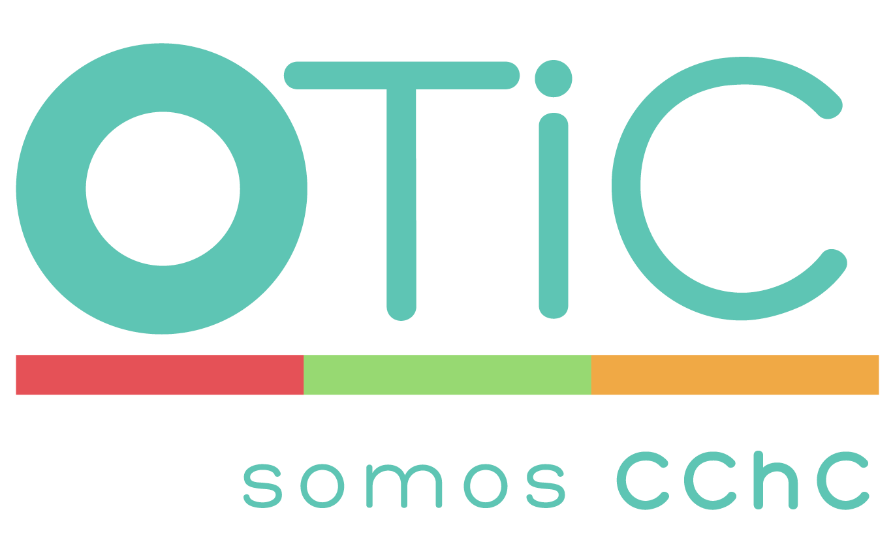

Academia Pyme
Explora herramientas como un diagnóstico digital, diseñado para identificar con mayor precisión tus desafíos y brechas de formación.

Realiza un diagnóstico digital gratuito junto a OTIC CChC y Valor Pyme para identificar oportunidades de mejora, acceder a orientación especializada y conocer opciones de capacitación para tu negocio.

OTIC CChC impulsa iniciativas orientadas al desarrollo de personas y empresas mediante capacitación, acompañamiento y asesoría especializada. En alianza con Valor Pyme, busca apoyar a las Pymes a identificar oportunidades de mejora y fortalecer capacidades clave para enfrentar los desafíos actuales del entorno empresarial.
Explora herramientas como un diagnóstico digital, diseñado para identificar con mayor precisión tus desafíos y brechas de formación.
Postula para acceder a los diferentes programas formativos creados por OTIC CChC y las empresas socias de Valor Pyme.
Descubre oportunidades para fortalecer conocimientos y habilidades de tu equipo.
Como parte de la comunidad Valor Pyme, puedes acceder gratuitamente a Academia Pyme, donde podrás evaluar 6 pilares estratégicos de tu negocio mediante un diagnóstico digital con resultados inmediatos. Además, recibirás recomendaciones personalizadas y acceso a capacitaciones y certificaciones de Coursera para fortalecer el crecimiento y desarrollo de tu Pyme.
Completa tus datos para formar parte de la comunidad.
Responde algunas preguntas para identificar oportunidades y desafíos de tu Pyme.
Conoce recomendaciones, oportunidades de capacitación y alternativas de acompañamiento.
No. El diagnóstico digital es gratuito para quienes forman parte de la comunidad Valor Pyme.
El proceso toma menos de 5 minutos y busca identificar oportunidades de mejora para tu Pyme.
No. Valor Pyme está abierto a emprendedores y Pymes de Chile, sin necesidad de ser cliente de Bci.